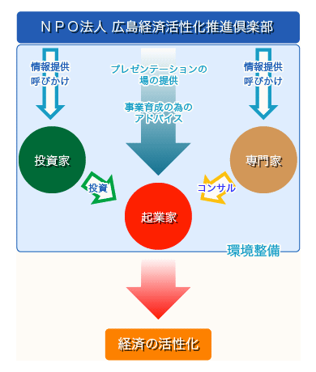
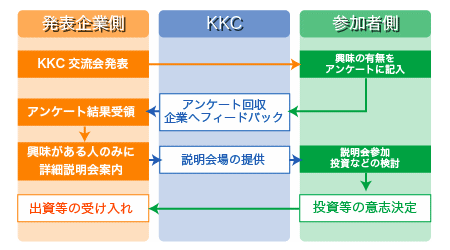

お見合い交流会とは
ＫＫＣでは、独創的な事業に取り組む起業家と、これを支援する投資家（エンジェル）および専門家とが集う「場」として、お見合い交流会を開催しています。
私たちＫＫＣのメンバーは、お見合い交流会を開催するため、日常から広島をはじめとする全国各地を巡って、高い志を持って独創的な事業に取り組んでいる有望なベンチャー企業・起業家を発掘しています。
発表するベンチャー企業・起業家には、ＫＫＣの理事であるＰＡ（プロエンジェル）による発表支援を実施し、ビジネスモデルのブラッシュアップを図ります。
交流会には、広島を中心とした投資家（エンジェル）、専門家等の参加を募り、ベンチャー企業・起業家の発表を通じて交流を深めます。交流会を契機としたベンチャー企業・起業家と投資家（エンジェル）との直接協議の中で、出資、業務提携、経営支援その他のアライアンスが生まれています。
最近では、起業を志す起業予備群や学生などの参加もあり、株式上場に向けた各ステージで奮闘するベンチャー企業・起業家を間近で感じ、交流を深めることで、互いに切磋琢磨を図る姿も見られます。
このような活動を通じて、結果としてこれまでに１億円以上のお金が投資家（エンジェル）からベンチャー企業・投資家に出資されました。また、出資だけでなく、業務提携なども数え切れないほど生まれています。
私たちの取組みは、非常に小さなものですが、ここから生まれた出資その他の成果が倍々となって流通していくことによって、広島経済の活性化に貢献しています。

最後に、私たちＫＫＣが皆さんにご提供するのは、ベンチャー企業・起業家と交流する「場」の提供であり、その後の出資、業務提携、経営支援等は、ベンチャー企業・起業家と参加者との直接の交渉により実施するものです。したがって、参加者は、自己責任の範囲で交流を深めることになりますので、十分に留意してください。